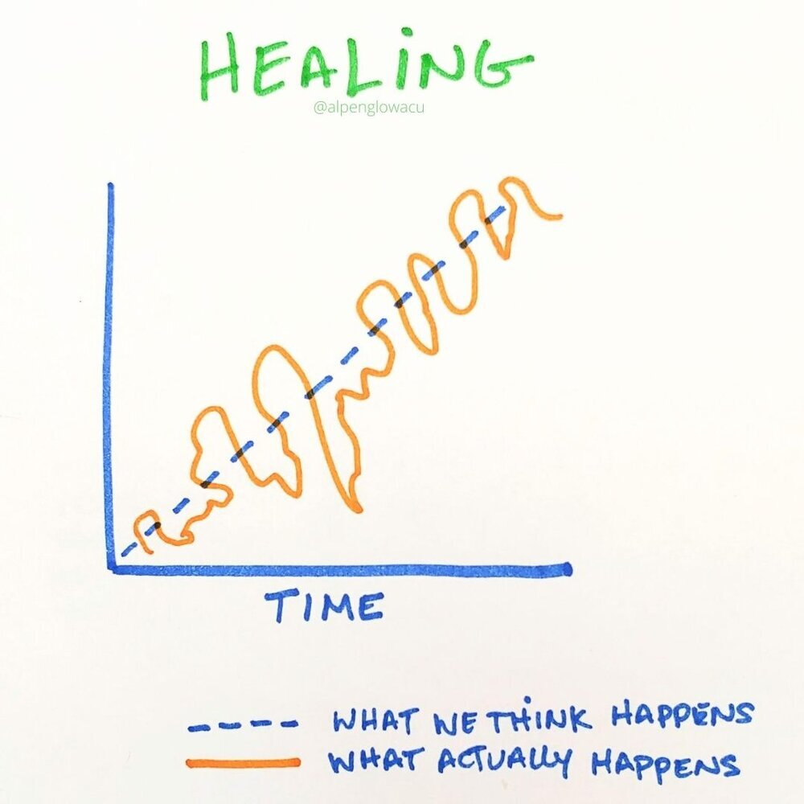

Healing isn't a linear process, especially for those who are more experienced or mature. People who've been through a variety of life challenges often know that healing comes in waves. There can be moments of progress, followed by setbacks or periods of introspection. The key is understanding that it's a journey, and sometimes it’s not about being “better” at every moment, but about continuing to grow, learn, and adapt. Even mature individuals face emotional complexities and realize that healing is often about finding balance rather than achieving a fixed endpoint.
So please, do not be ashamed of your current mental status 😊.
